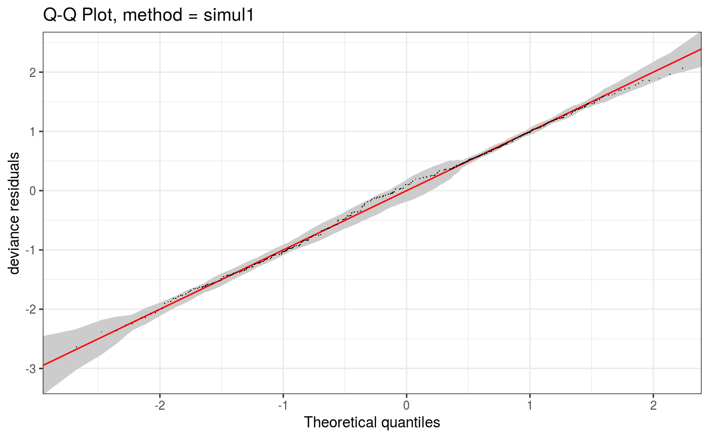
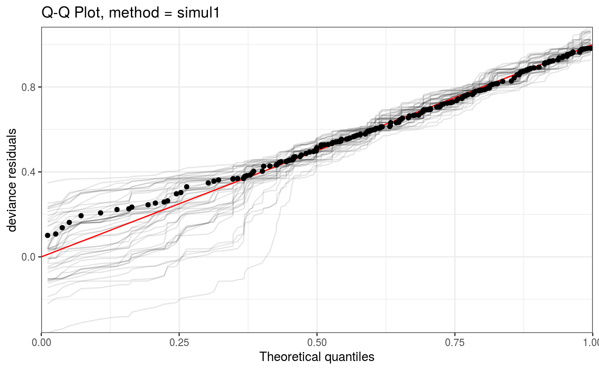

This function allows to zoom into a QQ-plot produced by qq.gamViz, in a computationally efficient manner.
# S3 method for qqGam zoom( o, xlim = NULL, ylim = NULL, discrete = NULL, ngr = 1000, adGrid = TRUE, CI = FALSE, worm = FALSE, showReps = FALSE, a.qqpoi = list(), a.ablin = list(), a.cipoly = list(), a.replin = list(), ... )
| o | the output of |
|---|---|
| xlim | if supplied then this pair of numbers are used as the x limits for the plot. |
| ylim | if supplied then this pair of numbers are used as the y limits for the plot. |
| discrete | if |
| ngr | number of bins to be used in the discretization. |
| adGrid | if |
| CI | if |
| worm | if |
| showReps | if |
| a.qqpoi | list of arguments to be passed to |
| a.ablin | list of arguments to be passed to |
| a.cipoly | list of arguments to be passed to |
| a.replin | list of arguments to be passed to |
| ... | currently unused. |
#> Gu & Wahba 4 term additive modelp <- binomial()$linkinv(dat$f) ## binomial p n <- sample(c(1,3),n.samp,replace=TRUE) ## binomial n dat$y <- rbinom(n,n,p) dat$n <- n lr.fit <- bam(y/n ~ s(x0) + s(x1) + s(x2) + s(x3) , family = binomial, data = dat, weights = n, method = "REML") lr.fit <- getViz(lr.fit) set.seed(414) o <- qq(lr.fit, rep = 50, method = "simul1", CI = "normal") o # This is the whole qqplot# We can zoom in along x at little extra costs (most computation already done by qq.gamViz) zoom(o, xlim = c(0, 1), showReps = TRUE, a.replin = list(alpha = 0.1), a.qqpoi = list(shape = 19))